Balanced Three-Phase Systems
A three-phase system combines three sinusoidal AC sources. A balanced source has:
- The same voltage magnitude in all three phases.
- The same frequency.
- A phase separation of , equivalent to one-third of a cycle.
A balanced load has identical impedances in all three phases:
Single-phase loads can be distributed across the three phases to keep the overall system approximately balanced.
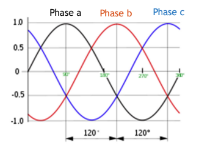
Phase voltages and neutral
When the three sources share a common connection point, that point is called the neutral.
The phase-to-neutral voltages are measured between each phase terminal and neutral. Taking phase A as the reference:
Here, is the common peak voltage.
- Phase B lags phase A by .
- Phase C lags phase B by .
- The angle is equivalent to .
Using RMS phasors:
Why use three-phase power?
1. Efficient use of wires
At the same phase voltage, current capacity, and power factor, a balanced three-phase supply can carry three times the power of one single-phase supply using three wires instead of two.
Compared with three separate single-phase circuits, this reduces conductor requirements and resistive losses.
2. Currents cancel at neutral
For balanced sinusoidal phase currents:
Therefore, no current flows through the neutral conductor under these ideal balanced conditions. Unbalanced loads can produce neutral current.
3. Constant total instantaneous power
Each phase has fluctuating instantaneous power, but the fluctuations cancel when all three phases are added:
This applies to balanced sinusoidal operation and helps produce smoother motor operation.
4. Rotating magnetic field
Three-phase currents can create a rotating magnetic field, making them useful for electric motors.
Remember
Balanced sources have equal voltage magnitudes and frequencies, separated by . Balanced loads have equal impedances. Together, they give zero neutral current and constant total instantaneous power.
Balanced Three-Phase Systems: Star and Delta
Notation
All voltage and current magnitudes below are RMS values.
- Line voltage: voltage between two supply lines.
- Phase voltage: voltage across one source winding or load impedance.
- Line current: current in a supply wire.
- Phase current: current through one winding or load impedance.
1. Star-Connected Sources
Three-phase sources and loads can be connected in star (Y or wye) or delta.
In a star connection, one terminal of each phase connects to a common point called the neutral.
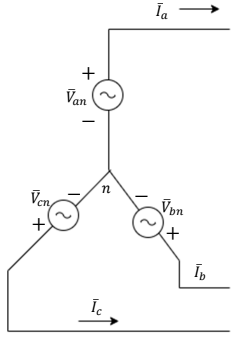
Phase voltage versus line voltage
- Phase voltage: Voltage between one phase terminal and neutral.
- Line voltage: Voltage between two phase terminals.
For a balanced source with phase sequence A–B–C:
Here, is the RMS phase-voltage magnitude.
Finding line voltages
A line voltage is the phasor difference between two phase voltages:
For example:
Therefore:
Key relationships:
- Line-voltage magnitude is times phase-voltage magnitude.
- Each line voltage leads its corresponding phase voltage by for the A–B–C sequence.
- The three line voltages remain separated by .
For example, leads by .
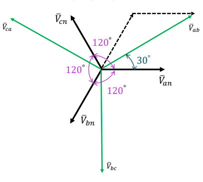
Line current versus phase current
Each line wire connects directly to one phase branch, so they carry the same current:
For a balanced load supplied by balanced voltages, the currents have equal magnitudes and are separated by . Their sum is zero:
Therefore, the neutral current is zero under balanced sinusoidal conditions.
Time-domain line voltages
Converting RMS phasors back to instantaneous voltages:
The factor converts phase RMS voltage to line RMS voltage. The factor converts RMS voltage to peak voltage.
Remember for a balanced star connection
Find line voltages by subtracting phasors, not just their magnitudes.
2. Delta-Connected Sources
In a delta connection, the three sources form a closed triangle. Each source connects directly between two line terminals, so there is no common neutral point.
Therefore, line voltage equals phase voltage:
Taking the voltage between lines a and b as the reference, for positive phase sequence:
The corresponding instantaneous voltages are:
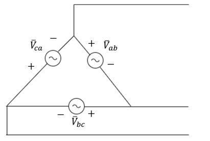
Balanced Loads
A balanced three-phase load contains three identical impedances, connected in star or delta:
The impedance angle is the angle between the voltage across a load branch and the current through that same branch:
- Positive angle: inductive load; current lags voltage.
- Negative angle: capacitive load; current leads voltage.
- Zero angle: resistive load; current and voltage are in phase.
For each branch, use Ohm’s law:
3. Star-Connected Load
Each line feeds one impedance, and the three impedances meet at a common point.
Because the line wire and its impedance carry the same current:
For a balanced system:
Therefore, the current magnitude is:
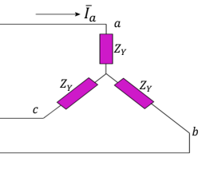
4. Delta-Connected Load
Each impedance connects between two lines, so it receives the full line voltage:
The current through each impedance is:
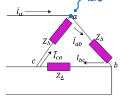
Phase currents
Taking the a-to-b line voltage as the reference:
Line currents
At each terminal, the supply current splits between two branches. Kirchhoff’s current law gives:
These are phasor differences, so we must account for the current angles.
For example:
Thus:
For positive phase sequence, each line current lags its corresponding branch current by :
The three line currents remain separated by and sum to zero:
5. Power in Balanced Three-Phase Loads
Power per phase
Each impedance absorbs active and reactive power:
Total power
Since the three phases are identical, total power is three times the power per phase.
Active power, measured in watts:
Reactive power, measured in VAR:
Apparent power, measured in VA:
Power factor:
These line-voltage and line-current formulas work for both balanced star and balanced delta loads.
Complex power
Using the voltage and current of the same load branch:
Equivalently, using RMS magnitudes:
Use the correct angle
The power-factor angle is between a phase voltage and its corresponding phase current. It is not generally the angle between a line-to-line voltage and a line current, because their relationship includes an additional shift.
Although each phase’s instantaneous power fluctuates, the fluctuations cancel in a balanced sinusoidal system. Total instantaneous three-phase power is constant.
6. Star vs Delta Summary
| Relationship | Star | Delta |
|---|---|---|
| Phase voltage | ||
| Line current | ||
| Current through one impedance | ||
| Total active power |
Memory aid: Star introduces the square-root-of-three factor in voltage; delta introduces it in current.
Star–Delta Impedance Transformations
Star and delta networks can be replaced by equivalent networks that draw the same line currents for the same applied terminal voltages.
The individual branch impedances must change when converting between connections.
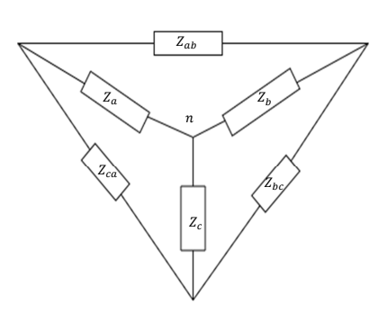
Star to Delta
Each delta impedance equals the sum of pairwise products of star impedances, divided by the opposite star impedance:
For example, the branch between terminals a and b is opposite the star branch connected to terminal c.
For a balanced load, all three star impedances are equal, so:
Delta to Star
Each star impedance equals the product of the two adjacent delta impedances, divided by the sum of all three delta impedances:
For a balanced load:
When can we use the factor of three?
Only when the three branch impedances are equal. For an unbalanced network, use the general formulas.
These transformations apply to the full complex impedances, including both resistance and reactance.
Per-Phase Equivalent Circuit
A balanced three-phase circuit can be solved by analysing just one phase. The other phases have the same magnitudes, with angles shifted by .
For the method shown in the lecture, express the source and load in star form.
Steps
- Convert any delta load into an equivalent star load:
- Find the source phase-to-neutral voltage.
For positive phase sequence:
Thus, its RMS magnitude is:
- Solve the single-phase circuit using Ohm’s law.
With ideal connecting wires:
If a line impedance is present, include it in series with the load impedance.
- Obtain the other line currents by shifting the angle:
- Multiply the power of one phase by three to obtain total power:
Hypothetical neutral
In a balanced system, the source and load neutral points have the same potential. A hypothetical neutral connection can therefore be used for analysis even if no physical neutral wire exists.
After converting a delta load to star, the calculated star branch current is the original line current. It is not the original delta branch current.
Three-Phase Voltage Measurement
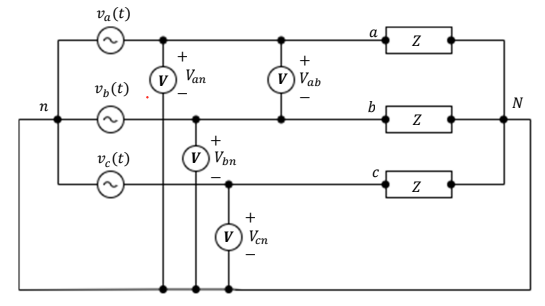
A voltmeter connects in parallel across the two points whose voltage difference is being measured.
- Between a line and neutral: measures phase-to-neutral voltage.
- Between two lines: measures line-to-line voltage.
For a balanced star connection:
For a delta connection:
AC voltmeters display RMS voltage for the sinusoidal signals considered here.
Three-Phase Current Measurement
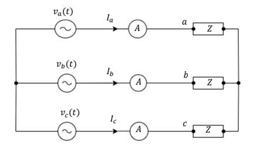
An ammeter connects in series with the branch whose current is being measured.
- In a supply line: measures line current.
- In a load branch: measures phase current.
For a star connection:
For a balanced delta connection:
AC ammeters display RMS current for the sinusoidal signals considered here.
Single-Phase Power Measurement
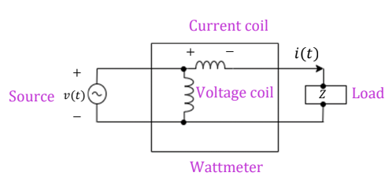
A wattmeter measures average active power, in watts:
It has two coils:
| Coil | Connection | Quantity sensed |
|---|---|---|
| Voltage coil | In parallel across the load | Load voltage |
| Current coil | In series with the load | Load current |
The wattmeter accounts for the phase difference between voltage and current.
Multiplying the RMS voltmeter and ammeter readings alone gives apparent power:
This equals active power only at unity power factor:
Three-Phase Power Measurement
The three-wattmeter method measures the active power of each phase and adds the readings:
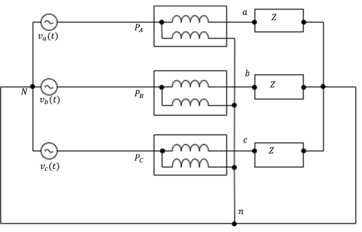
In the star circuit shown:
- Each current coil is in series with its corresponding line.
- Each voltage coil connects between that line and neutral.
For a balanced load, all three readings are equal:
Therefore:
For an unbalanced load, the readings may differ. Add the three measured powers; do not assume one reading represents all three phases.
Three-phase four wire systems
- A fourth wire is used as the neutral wire or a return path.
- In a balanced three-phase system, the neutral current will be equal to zero.
- In an unbalanced three-phase system, the neutral current will not be zero and the neutral wire carries a current.